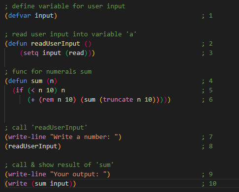

Мета
Написати процедури, що обчислюють задану функцію за допомогою рекурсивного процесу. Продемонструвати застосування звичайної та хвостової рекурсії.
Завдання
Хід роботи
Завдання 1.1
Приклад коду програми

Пояснення щодо коду
В першому пункті створюємо змінну input за допомогою функції defvar.
В другому пункті створюємо функцію readUserInput без параметрів.
В третьому – даємо змінній input значення введене з клавіатури за допомогою функції setq та read.
В четвертому – створюємо функцію sum з аргументом n(який означає число) для розрахунку суми цифр певного числа.
В п’ятому – перевіряємо чи n менше ніж 10, якщо так, то повертаємо число.
В шостому – функція rem виконує ділення з остачею, результат якої додається до результату виклику методу sum аргументом якого є функція truncate, яка обрізає останню цифру числа.
В сьомому – виводимо на екран текст за допомогою команди write-line.
У восьмому – викликаємо функцію readUserInput, назва якої говорить сама за себе.
У дев’ятому – виводимо текст на екран(як і в пункті 7).
Та, в десятому – виводимо на екран результат функції sum з параметром input.
Приклад роботи програми
Завдання 1.2
Приклад коду програми

Пояснення щодо коду
1 – 3: Створюємо змінні sum, pr(ініціалізовуємо відразу), periods.
4: Створюємо функцію contributionAmount з двома параметрами.
5: Перевіряємо чи periods більше нуля.
6: Якщо так, то викликаємо цю ж функцію ще раз передаючи змінені параметри.
7: Якщо ні, то повертаємо суму
8: Виводимо текст на екран.
9: Читаємо значення sum з клавіатури.
10: Виводимо текст на екран.
11: Виводимо текст на екран.
12: Читаємо значення periods з клавіатури.
13: Виводимо відформатований текст на екран з результатом функції contributionAmount.
Приклад роботи програми
Висновок
На цій лабораторній роботі я ознайомився з рекурсією в Lisp. Cтворив і запустив програму, в якій використав здобуті навички.